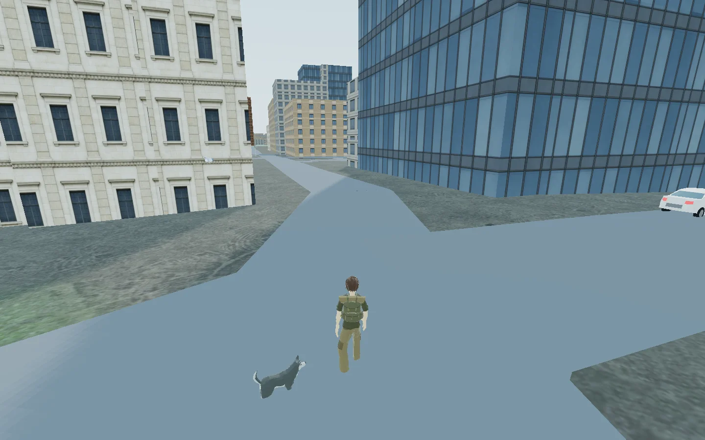
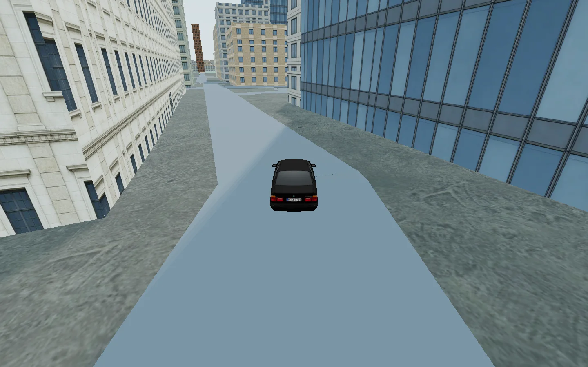
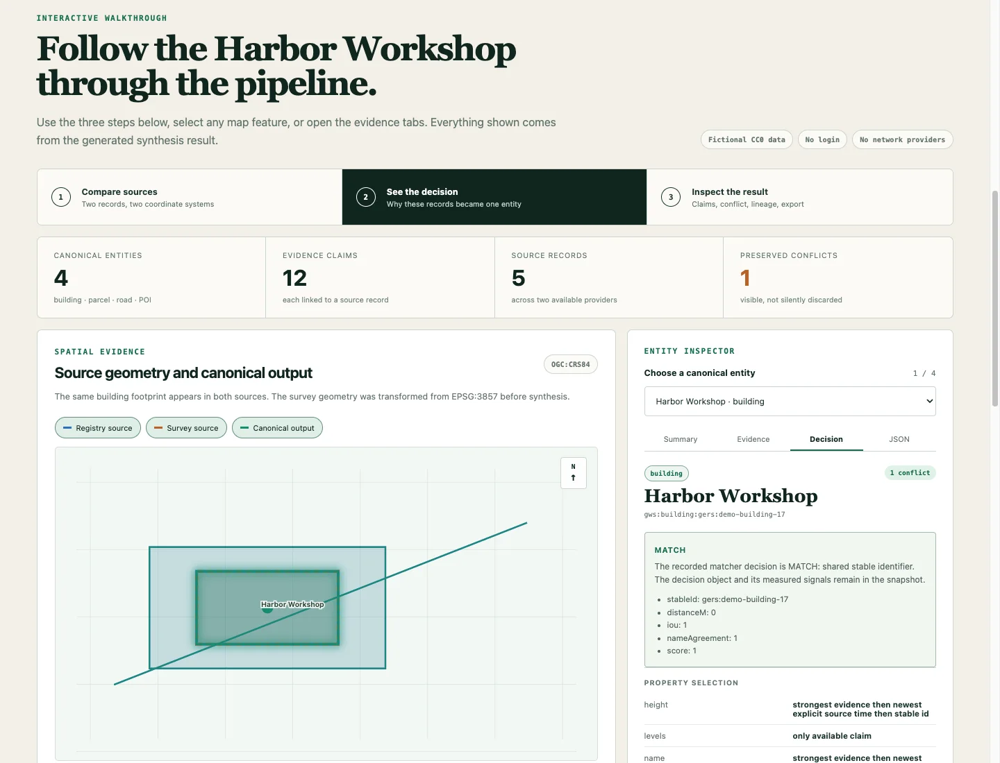

About
World Explorer
World Explorer started with a simple question: how much of the real world could I turn into a world you can actually explore?

Instead of building a fictional map, World Explorer uses real geographic data as the foundation for an interactive 3D environment that runs in the browser. Roads, buildings, terrain, points of interest and other features come from real-world data where it is available. From there, procedural systems fill in what the underlying data does not describe.
That distinction is important. A map may tell World Explorer where a building is and what its footprint looks like without knowing what every window, wall or room looks like. The goal is to preserve what is actually known while generating enough of what is missing to make the place usable as an interactive world.
The result is somewhere between a world explorer, sandbox, simulation and game. I am still figuring out exactly where those boundaries belong.
Geographic space should be interactive, not just viewable.
You can move through real locations on foot and use different forms of transportation. Roads become places to drive rather than lines on a map. Buildings and points of interest can become places to interact with rather than markers. Airports can connect travel between locations. Water, terrain and environmental information become parts of the environment itself.
The project has expanded into traffic, pedestrians, interiors, property and land systems, wildlife and collecting, marine exploration, aircraft, environmental systems, multiplayer features and other ways of interacting with the world.
It has also expanded beyond Earth. The Expedition side of World Explorer carries the same idea into space, with spacecraft, travel, exploration and mission-based systems.
Not every part of the world has the same level of detail, and the underlying data varies enormously from place to place. World Explorer is an ongoing attempt to make all of those different systems work together without requiring every location on Earth to be built by hand.

No single dataset contains a complete 3D world.
One source might know where a road is. Another might contain building information. Another may describe elevation, land use, weather or a point of interest. Sometimes two sources describe the same thing differently. Sometimes important information simply does not exist.
World Explorer has to assemble those pieces into one environment.
- 01 Real-world sources Roads, footprints, elevation, land use and places
- 02 World synthesis Normalize, reconcile, preserve evidence and identify gaps
- 03 Interactive world Terrain, structures, travel, interiors and activities
Where reliable source information exists, the system tries to preserve it. Other properties can be derived from available information, inferred when there is enough context, or generated procedurally when something needs a representation but the real information is unknown.
That means the world is intentionally a mixture of real geographic evidence and generated representation. World Explorer should know the difference between the two rather than quietly treating something it generated as measured reality.
Detail and accuracy vary by location and source coverage. Generated representation makes missing parts playable; it does not turn invented detail into measured fact.
This problem eventually became large enough to become a separate project of its own.

Geospatial World Synthesis
While building World Explorer, I kept running into the same underlying problem: different geographic sources can describe different pieces of the same place, disagree with one another, or leave gaps that still have to be dealt with.
That work became Geospatial World Synthesis, a separate open-source project.
Geospatial World Synthesis takes bounded records from different geospatial sources and turns them into a common, renderer-neutral representation. It keeps the original source identities and provenance, can reconcile records that appear to describe the same real-world entity, preserves disagreements instead of silently overwriting them, and keeps evidence separate from derived or generated information.
In simpler terms, it is an attempt to let software assemble a useful description of a place while still being able to answer: Where did this information come from? What do we actually know? What was calculated? What conflicts? And what did the software have to fill in?
The project grew out of problems I encountered while building World Explorer, but it is being developed independently so World Explorer and other applications can use and evaluate the same underlying approach.
It began as a small map-based racing idea.
World Explorer did not begin as an attempt to build all of this.
Near the beginning of 2026, I started working on a small map-based racing idea with my son. I began wondering whether the map itself could become more than a background—whether real geographic information could be used to construct a 3D environment that you could actually drive through.
Once I got that working at a basic level, one question kept leading to another.
If you can drive the roads, what happens when you get out of the car? If the buildings are there, can you use them? If airports exist in the data, can they actually take you somewhere? What about boats and water? Wildlife? Property? Other players? And if the project is about exploring the world, where does the world actually end?
The original little racing idea got away from me.
I’m Steven Reid.
World Explorer is something I create and maintain for fun. There is no large development studio behind it.
I started the project without a background in game development or professional software engineering.
I use AI-assisted development tools extensively to help turn my designs and specifications into working code, test implementations, investigate problems, and work through areas I am still learning. The direction of the project, the systems I choose to pursue, and the decisions about how they fit together come from that continuing process of experimentation and learning.
As the project became more complicated, I also became too interested in what was happening underneath it to be satisfied with letting AI handle everything I did not understand. I want to understand why these systems work, what the code is actually doing, and enough of the underlying science and mathematics to make better decisions myself.
That is part of what led me back to school. I am currently enrolled in a physics program and plan to take programming courses as electives while I continue working on World Explorer.
Working on the project has pushed me into 3D graphics, geospatial data, procedural generation, simulation, physics, networking, asset pipelines, software architecture and plenty of subjects I knew almost nothing about when I started.
I am also neurodivergent and have ADHD and autism. Outside of World Explorer, some of my interests include playing drums and dog training. I tend to get deeply interested in figuring out how things work, which probably explains at least some of how a little racing map turned into this.
World Explorer is still something I do for fun. I am learning as I build it, and I expect both the project and my understanding of it to keep changing.
The work is public and the sources stay visible.
World Explorer is developed publicly on GitHub. The repository contains the application source, project history and the systems that make the world work.
Geospatial World Synthesis is maintained separately so the underlying geospatial work can be used and evaluated without needing the rest of World Explorer.
World Explorer’s own repository is publicly viewable under its source-available license. Geospatial World Synthesis is open-source software under the MIT License.
For third-party data, models, libraries and other material used by World Explorer, the project’s attribution and acknowledgements remain the authoritative lists.
Help keep the world growing.
World Explorer is free to explore and is still an independent project. As it has grown, so have the costs of hosting, data services, assets and the tools I use to keep developing it.
If you enjoy World Explorer and want to help me keep building it, donations are welcome. Support helps cover those costs and gives me more room to keep experimenting with the project.
It started as a map racing project with my son. It has gotten a little bigger since then.
It is an entire world, after all.